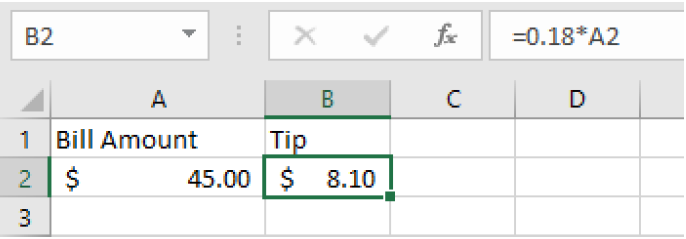
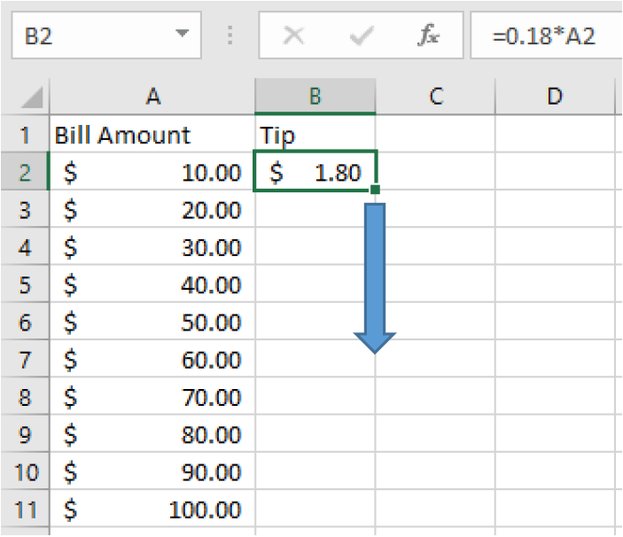

Objectives:Section 3.1 Introduction to Spreadsheets
Students will be able to:
Perform basic calculations on a spreadsheet
Use cell references and the fill-down feature
A spreadsheet such as Google Sheets or Microsoft Excel, is a very useful tool for doing calculations and making complex tables. You can type in your own custom calculations or use the built-in formulas.
The rectangles within a spreadsheet are called cells, and they can be referenced by their column letter and row number. The first cell in the upper left side highlighted below is A1. If we wanted to talk about the third column and the fifth row, that cell would be C5.
A spreadsheet file can contain many sheets. Look along the bottom to see if there is more than one sheet and make sure you are on the right sheet.
Subsection3.1.1Basic Calculations
To do a calculation on a spreadsheet, type an equal sign before the operation. This lets the program know that you want it to calculate the result. When you press enter, you will see the result.
Example3.1.1.
To add 3 + 4, enter =3+4
To subtract 100-76, enter =100-76
To multiply 4 times 18, enter =4*18
To divide 0.05 by 12, enter =0.05/12
To calculate \(5^{25}\text{,}\) enter =5^25
Note that the asterisk (*) is used for multiplication. Spreadsheets don’t recognize parentheses as indicators of multiplication like calculators do, so even if you have parentheses for the order of operations, the asterisk is also needed.
You can make more complicated mathematical expressions using parentheses and other operations. To edit a cell click on the editing box at the top, or double click on the cell to edit it directly.
Example3.1.2.
Your bill at a restaurant is $35.75 and you want to leave an 18% tip. How much would you add to the bill?
To work with a percentage, we need to convert it into a decimal first, and then multiply it by the base amount.
In a spreadsheet we would type
=0.18*35.75
and get a result of $6.44, rounded to the nearest cent. You would leave a tip of $6.44.
Subsection3.1.2Cell References
One of the powerful things about spreadsheets is using a cell reference, such as C5 in a calculation. When you use a cell reference, the values will automatically update if any of the referenced values change.
Let’s make a spreadsheet for the percentage tip example above. We calculated an 18% tip on a bill of $35.75. We might want to tip 18% in general, but our bill will change values. We labeled the first column Bill Amount and the second column Tip. The amount of $35.75 is entered in cell A2. Then when we write our formula in B2, we want to calculate 18% of A2. That way if the number in A2 changes, our tip will automatically update.
The formula
=0.18*A2
is entered in B2 which gives a result of $6.44 when you hit enter.

When the bill amount is changed, the tip is recalculated.
Subsection3.1.3Cell Formatting
We can also format cells A1 and B1 to show dollar signs by clicking on the dollar sign in the number formatting menu.
Subsection3.1.4Fill-Down Feature
The fill-down feature is very useful for making tables. This allows us to copy values or formulas to save time. Let’s make a tipping reference table with values from $10, to$100, in increments of $10. First, we will enter two values in column A to establish the pattern. Then select those two cells and you will see a small square in the lower right corner. Drag that square down until you get to $100.

Next, we can drag our formula down and the cell reference will change to each row number automatically.
Here are the formulas with the row numbers updated:
Here is our completed table with the calculations:
Subsection3.1.5Formulas
Spreadsheets have many useful built-in formulas. We will introduce some of the financial formulas in this chapter. Here are some of the formulas we will use:
=FV to calculate the future values of an investment
=PV to calculate the deposit needed for a desired future balance
=PMT to calculate a loan or savings plan payment
=EFFECT to calculate the effective rate of an account and compare accounts
In the rest of this chapter we will use spreadsheets and formulas to calculate the future values, interest paid or earned and monthly payments.
Subsection3.1.6Using a Spreadsheet for a Personal Budget
Activity3.1.1.Budget Project.
In this lab, you will create a budget spreadsheet to keep track of monthly income, expences, and savings, and you will use several spreadsheet functions and formulas.
(a)
Create a new spreadsheet in Goolge Sheets, Microsoft Excel or Apple Numbers. This lab will refer to functions and formulas in Google sheets.
(b)
Gracie wants to save for a summer vacation with her friends. She estimates that her vacation will cost $2000. Can she afford to go? To find out, she decides to buget her income and expenses for the spring semester to determine if she’ll have enough money saved in order to go. Set up your spreadsheet so that it matches the picture below.
(c)
Fill in the bugdget with the following information
Gracie’s first job makes $500 a month.
Gracie only works her second job during March, April, and May. She makes $200 each of those months.
Gracie receives birthday money from some of her relatives in February totally $75.
Gracie pays for $35 of school supplies in January and $15 in March.
Gracie spends $100 a month on groceries.
Gracie spends $10 a month on toiletries (toothpaste, shampoo, etc.)
Gracie spends $25 a month on streaming services.
Gracie spends $70 a month on eating out and getting coffee.
Gracie spends $20 on birthday gifts for her family in the months of January (her mom), March (her brother), and May (her dad).
Gracie spends $45 on gasoline each month because she visits her family many weekends during the school year.
(d)
Create formulas for the “Total” column, the “Month Total” rows, and the “Savings” row.
(e)
You should end up computing Gracie’s total savings as a number less than her goal of $2000. How much money does she save up in this scenario? How much is she short of her goal?
(f)
Help Gracie decide what expenses to cut in order to reach her goal. Precisely list everything she should change, and what her new total savings will be after making your suggested changes.
(g)
Copy and paste your spreadsheet into the space below.
(h)
Use moral, ethical, and/or biblical reaons to explain why the changes you suggested above were the best choices for Gracie. Feel free to use your imagination to fill in necessary details about her life. Write 1-3 paragraphs.
This question will be graded according to your use of ethical, moral, or Biblical principles in your reasoning, and your use of numbers in your reasoning, such as:
Interpretation: Ability to explain information presented in mathematical forms (e.g., equations, graphs, diagrams, tables, words)
Application / Analysis: Ability to make judgments and draw appropriate conclusions based on the quantitative analysis of data, while recognizing the limits of this analysis
Communication: Expressing quantitative evidence in support of the argument or purpose of the work (in terms of what evidence is used and how it is formatted, presented, and contextualized)
Exercises3.1.7Exercises
Use a spreadsheet to compute the following questions. Submit your answers using the following practices:
Use a new line (or multiple lines) for each problem.
Copy the question text above your answer.
Use spreadsheet formulas to get your answer.
Put a box around your answer.
When you’re done, export to PDF and submit the PDF.
For example, for question 1,
Videos showing how to export spreadsheets to PDF from Google Sheets, Microsoft Excel, and Apple Numbers, respectively.
1.
Convert \(4/7\) to a decimal
2.
Convert 16% to a decimal
3.
Add 8 and 19
4.
Find the difference of 230 and 78
5.
Multiply 12 and 9
6.
Divide 0.09 by 52
7.
Calculate \(8^3\)
8.
Your bill at a restaurant is $55.75 and you want to leave a 20% tip. How much would you add to the bill?
9.
You leave a tip for $7.50 for a bill at a restaurant that is $44.50. What percent tip did you leave?
10.
In Column A use the fill down feature to build a spreadsheet starting with $5 and ending at $125, in increments of $5. In Column B write a formula with a cell reference to calculate a 15.5% tip on the amount in Column A. Use the fill down feature to complete your table.
11.
Imagine a certain savings account started out with a balance of $5250.00 on day-one, and today has a current balance of $5780.23
Exactly how much more money does the account have today, compared with day-one?
Rounding to the nearest tenth of a percent: By what percentage amount has the account balance grown?
If instead, the bank balance today was exactly double the starting balance, then by what exact percentage amount would the bank balance have grown?
If the bank balance today had instead grown by 15.5% since day-one, then what would be the exact amount of today’s balance?
12.
Imagine that at the start of a certain month, you will make an opening deposit of $500 into a savings account, and you will then leave the account alone (meaning you will make no further deposits or withdrawals). Also, for this account: Every month after the opening deposit, the amount in the account will grow to be 101% of its previous month’s balance.
Use a spreadsheet to enter 500 in cell A1. Using a formula and a cell-reference: Compute in cell A2, the amount in the account after one month has passed. Then using the fill down feature, continue the pattern for another eleven full months (you should end at cell A13). Format all the cells to show dollar signs. What is the amount in the account after one year?
Now continue the pattern in column A of your spreadsheet to extend for a second full year (you should end at cell A25). What is the amount in the account after two years?
What overall percentage growth occurred in the account between the opening deposit and one year later? (Compute using a formula and cell references)
What overall percentage growth occurred in the account between the end of year one, and the end of year two? (Compute using a formula and cell references)
(Challenge) The annual percentage growth that you found in part (d) for the second year, should be identical to the annual percentage growth that you found in part (c) for the first year. Can you mathematically explain why this is true? Do you think this pattern of identical overall annual percentage growth would continue, if you extend the pattern for even more years?
13.
Imagine that at the start of a certain year, you will deposit $1000.00 into a savings account, and then you will leave the account alone. Each year after the opening deposit, the amount in the account will grow to be 103% of its previous year’s balance.
After two years, the account balance will have experienced two growth amounts of 103%. You can find this account balance amount here, with the spreadsheet computation = 1000 * (103%) * (103%). Perform this computation in a spreadsheet and write the balance that you find.
Now enter the spreadsheet computation = 1000 * (103%)^2. Notice that the result here, which involves using a power, gives the same answer as you found in part (a). Comparing the two spreadsheet computations: Explain why they give the same result.
Using the pattern in part (b) above, and carefully choosing the power: Compute the balance that will be in the account fifteen full years after the account was originally opened. (Round to the nearest cent)
(Challenge) Make a spreadsheet that shows the account balance each individual year for 30 years. From the date of the opening deposit: What minimum number of full years will you have to wait, until the balance finally exceeds twice its opening deposit amount? (Use cell references, the fill down feature, and dollar formatting)
(Challenge) Imagine the opening balance of the account was $5000.00 instead of $1000.00 (and everything else about the account stays the same). Make a similar spreadsheet as you did in part (d), and using this spreadsheet, find the minimum number of full years you will have to wait this time, until the balance finally exceeds twice its opening deposit amount. How does this answer compare with your answer in part (d)? Do you think your answer would be the same here, for any positive opening balance you may choose for the account?